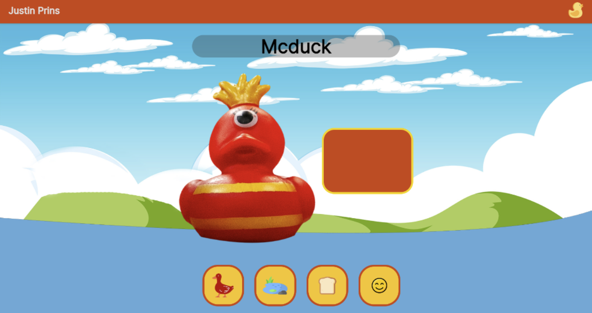
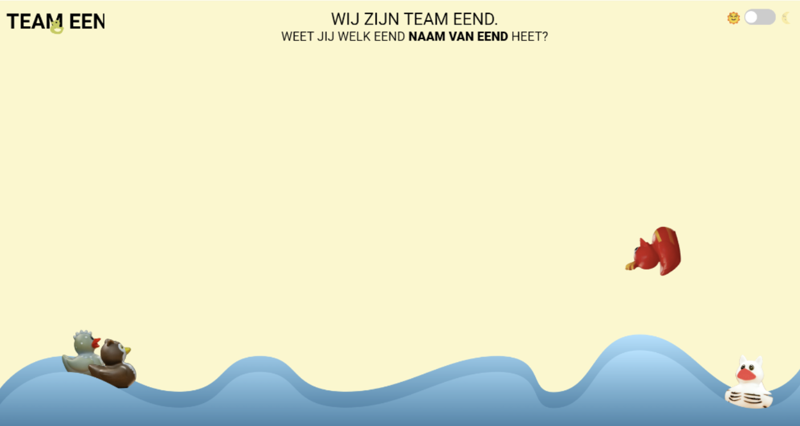
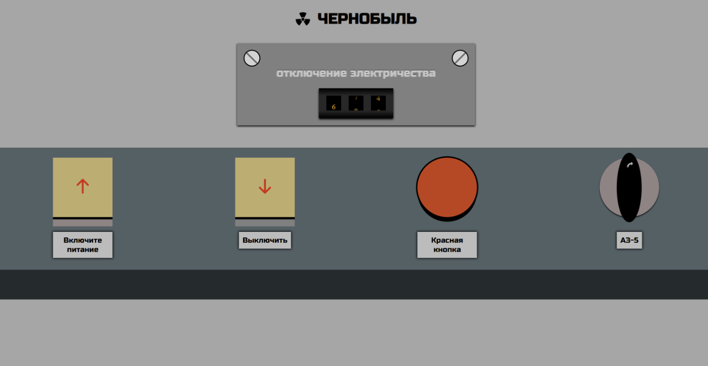
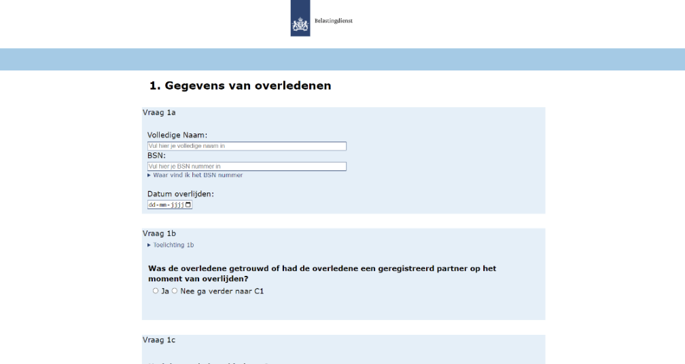
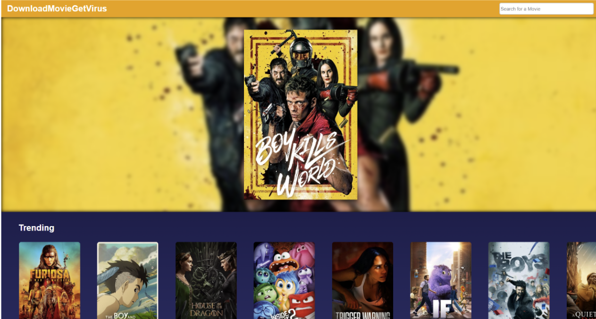
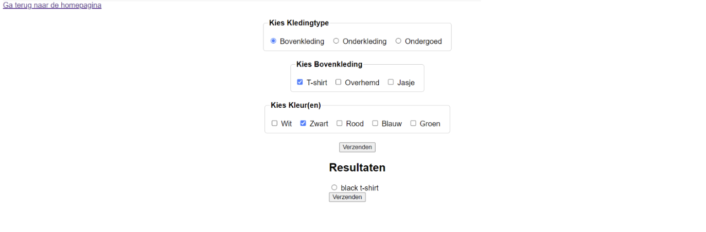
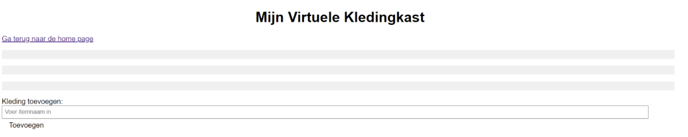
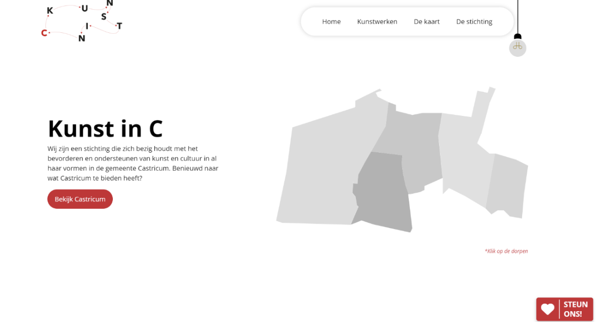

Reflectie
Welkom bij mijn reflectie van de minor. Op deze pagina reflecteer ik op de vakken in de minor nadat ik de meesterproef heb afgerond. Ik ga even kort in op elk vak en zou daarna een hele reflectie geven over de Minor.
WAFS
Het vak WAFS was waar het allemaal begon. Hoewel het vak aanvoelde als een warming-up, was het voor mij meteen overweldigend. Termen zoals JSON en API werden gebruikt, terwijl ik toen nog nooit van deze termen had gehoord. Ondanks dat het vak een fijne introductie was, had ik graag wat meer uitleg over de basis van Javascript gekregen voordat we ons verdiepten in het fetchen van data.
Als ik dit vak opnieuw had mogen doen, dan zou ik veel meer vragen stellen bij het onderdeel over het fetchen van data. Destijds vond ik het moeilijk en had ik hulp van mijn teamgenoten nodig. Nu na de meesterproef, zou ik het fetchen van data zonder hulp van ChatGPT of anderen kunnen uitvoeren. Bovendien zou ik de styling van mijn site veel mooier kunnen maken.
 CSS to the rescue
Het vak CSS to the Rescue was een leerzame ervaring voor mij, maar achteraf gezien had ik meer vragen moeten stellen. Dit vak hielp me een belangrijk leerdoel te ontdekken, het stellen van vragen. Soms raakte ik vast door kleine dingen die ik in de CSS beter had kunnen aanpakken, dit kostte mij veel tijd hierdoor kon ik niet iets maken waar ik echt trots op was qua styling.
Desondanks heb ik veel geleerd van dit vak, vooral over nesting, het werken zonder classes, de has selector en de kracht van CSS. Wat nesting betreft, merk ik nu dat ik het soms te veel gebruik. Omdat niet alle browsers het ondersteunen, probeer ik deze gewoonte nu een beetje af te leren.
Als ik dit vak opnieuw zou doen, denk ik dat ik iets veel mooiers zou kunnen maken. Dit komt doordat ik nu veel meer ervaring en zelfvertrouwen heb als het om CSS gaat. Als ik vast zou komen te zitten, zou ik veel eerder om hulp vragen. Bovendien ben ik beter geworden in het lezen van uitleg, bijvoorbeeld op W3Schools.
Browser Tech
Dit vak was het moment waarop ik echt begon te twijfelen of ik deze minor überhaupt zou halen. Het werd tegelijk gegeven met CSS to the Rescue en richtte zich vooral op progressive enhancement en validatie. Voor mij voelde het als veel te veel werk, ik had liever meer aandacht besteed aan de kwaliteit van mijn functionaliteiten dan geprobeerd alle 27 pagina's af te ronden.
Tijdens dit vak heb ik enorm veel HTML geschreven en vaak getwijfeld of ik het zou halen. Toch heb ik het uiteindelijk met de hakken over de sloot gehaald. Ik heb functionaliteiten zoals local storage en hide & show fieldset geschreven, met behulp van ChatGPT en Lars. Ook heb ik aandacht besteed aan validatie en heb ik veel geleerd over forms en de bijbehorende elementen.
Als ik terugkijk op dit vak, besef ik dat ik het nu, met de ervaring die ik inmiddels heb opgedaan, veel makkelijker zou kunnen afronden. Ik zou nu meer focussen op het perfect afronden van de bouwstenen en het schrijven van de juiste functionaliteiten, in plaats van alle bouwstenen tegelijk in mijn HTML-elementen te gooien. Ik zou dit vak veel sneller kunnen halen en veel netter kunnen afronden. Als ik dit vak opnieuw zou doen, weet ik zeker dat ik een veel hoger cijfer zou halen en dat ik veel minder geïntimideerd zou zijn door de hoeveelheid werk.
API
Dit vak kwam voor mij het meest intimiderend over, omdat het server-side was. Ik werkte met TinyHTTP en Liquid, en besloot tijdens dit vak aan mijn leerdoel te werken: het stellen van vragen. Ik merkte dat dit mij enorm heeft geholpen bij het behalen van dit vak. Sterker nog, zonder het stellen van veel vragen had ik dit vak waarschijnlijk niet gehaald. De docenten waren erg behulpzaam en namen de tijd om alles haarfijn uit te leggen. Tijdens de meesterproef merkte ik meteen het profijt van dit vak, maar daar zal ik later op ingaan.
Verrassend genoeg vond ik dit een van de leukste vakken. Doordat ik veel durfde te vragen, kwam ik niet vast te zitten en leerde ik veel en maakte ik goede progressie. Ik was erg tevreden over mijn functionaliteiten en code. Hoewel mijn styling beter kon, lag daar niet mijn focus bij dit vak.
Als ik dit vak opnieuw zou moeten doen, denk ik dat ik het server-side gedeelte zonder hulp zou kunnen afronden. Alleen bij erg moeilijke gedeeltes zou ik nog vragen stellen. Inmiddels zou ik het server-side gedeelte zelf kunnen opzetten en begrijpen, waardoor ik in het vervolg meer de focus op de styling zou kunnen leggen.
HCD
HCD draaide volledig om toegankelijkheid en testen met de eindgebruiker. We maakten een webapplicatie specifiek voor de behoeften van een specifieke eindgebruiker. In mijn geval was dit Petra, die volledig blind was. Qua styling hoefde ik niets te doen, maar ik moest wel iets bouwen dat volledig voor haar werkte. Daarom richtte ik me sterk op toegankelijkheid en besloot ik veel te testen.
Het testen was erg leuk omdat ik kon experimenteren. Ik besloot bijvoorbeeld een keer een functie juist zo ontoegankelijk mogelijk te maken, gewoon om te zien wat voor effect dit bij haar zou hebben. Dit vak was speciaal omdat we de tijd hadden om te testen met een echte gebruiker die een handicap had, waardoor we extra nadruk konden leggen op toegankelijkheid.
Als ik dit vak opnieuw zou doen, zou ik nog meer ongebruikelijke dingen laten testen en juist meer dingen proberen die een beetje vreemd of onlogisch lijken. Ik denk dat ik, als ik dit vak opnieuw zou doen, een nog beter product voor Petra zou kunnen maken.
 De meesterproef
De meesterproef was, in mijn optiek, het leukste en meest leerzame project van deze minor. Ik zou het zo nog een keer willen doen, gewoon omdat ik er zoveel van heb geleerd. Tijdens dit project heb ik intensief aan mijn leerdoelen gewerkt en omdat ik deze doelen heb behaald, voelt het project zeer voldaan aan.
Allereerst heb ik enorm veel nieuwe vaardigheden opgedaan op het gebied van coderen. Ik heb nieuwe technologieën en technieken uitgeprobeerd, zoals werken met GSAP en SVG-animaties, werken in WordPress, PHP, EJS, Node.js en ACF. Daarnaast heb ik geleerd hoe je bepaalde dingen in CSS schoner kunt schrijven en hoe je in componenten werkt wanneer je in groepen samenwerkt.
Ik heb ervaren hoe het is om in een team aan code te werken en hoe belangrijk communiceren en code reviews zijn. Ook heb ik geleerd dat je soms dingen die je hebt gemaakt, moet kunnen schrappen, en hoe je lokaal geschreven code omzet naar PHP. Bovendien heb ik veel geleerd van mijn groepsgenoten door vragen te stellen..
Daarnaast heb ik geleerd hoe het is om met een klant te werken en hoe belangrijk het is om opdrachten goed af te stemmen met de klant en duidelijk te communiceren. Hoewel deze ervaring geweldig was, nam het wel veel tijd in beslag en had het mijn volledige focus, zowel op school als daarbuiten. Hierdoor had ik minder tijd om bijvoorbeeld aan mijn Weekly Nerd-site te werken, maar dat vind ik niet erg, omdat ik ontzettend veel heb geleerd tijdens de meesterproef. De intensiteit en de vele uren die ik erin heb gestoken, hebben dit project tot een waardevolle ervaring gemaakt.
Leerdoelen
Gewaagder/ creatievere ontwerpen
`“Wat ik deze minor heb gemerkt is dat ik door de angst voor het coderen minder risico's neem met de designs van mijn ontwerpen. Omdat ik al snel iets te moeilijk vind lijken, houd ik mijn ontwerpen vrij redelijk eenvoudig. Bij de meesterproef wil ik creatievere websites maken en mijzelf niet laten beïnvloeden door negatieve gedachten over mijn programmeer vaardigheden.”
Dit leerdoel heb ik behaald als ik kijk naar de dingen die ik heb ontworpen. Als ik terugkijk naar de GSAP side scroll, had ik zoiets eerder niet durven te ontwerpen omdat ik dacht dat ik het nooit zou kunnen coderen. Hetzelfde geldt voor de route-animatie. In plaats van me te laten tegenhouden door onzekerheid, heb ik gewoon creatieve dingen ontworpen en uitgevoerd. Deze ervaring heeft me laten zien dat ik in staat ben om uitdagende ontwerpen te realiseren.
Vragen/ feedback
“Wat ik merkte bij meerdere vakken bij deze minor is dat ik te weinig durfde te vragen. Hierdoor liep ik veel vast en verloor ik aardig wat tijd met simpele dingen of fouten in de code. Bij het vak API heb ik hier verandering in gebracht en heb ik ontzettend veel vragen gesteld waardoor ik waarschijnlijk dat vak ook heb gehaald. Dit vragen stellen wil ik ook doorzetten bij de meesterproef. Ik wil leren om vragen te stellen ook al lijken sommige vragen dom.”
Tijdens de meesterproef merkte ik dat ik veel vragen stelde, en dat heeft me enorm geholpen. Ik heb nooit het gevoel gehad dat ik iets niet kon bereiken of echt vastzat. Ik had altijd het vertrouwen dat ik ergens wel uit zou komen, of dat nu alleen was of met behulp van anderen.
Mijn aanpak was als volgt: als ik ergens niet uitkwam, probeerde ik het eerst zelf op te lossen. Vervolgens ging ik na wat er fout ging en zocht ik naar een oplossing. Als dat niet werkte, vroeg ik mijn teamgenoten om hulp. En als ook dat niet voldoende was, schakelde ik de hulp van mijn docenten in. Op deze manier vond ik altijd een weg vooruit.
Door deze ervaring ben ik niet langer bang om vragen te stellen. Tijdens de meesterproef heb ik dit zo vaak gedaan dat het een gewoonte is geworden. Deze aanpak heeft me geleerd dat het stellen van vragen helpt om vooruitgang te boeken en problemen op te lossen en dat er geen domme vragen zijn.
Javascript
“Ik vind zelf javascript de moeilijkste taal om te gebruiken. Op het moment vind ik het erg lastig om zelf functies te schrijven, daarom gebruik ik chatGPT en de hulp van klasgenoten. Na de meesterproef wil ik de basis van javascript begrijpen en zelf functies kunnen schrijven zonder hulp van chatGPT of klasgenoten.”
Tijdens de meesterproef heb ik mij beziggehouden met het schrijven van JavaScript functies en heb ik ook een JavaScript cursus gevolgd. Na afloop van de meesterproef merk ik dat ik JavaScript functies die door anderen zijn geschreven begin te begrijpen en dat ik ze kan aanpassen naar mijn eigen behoeften. Hoewel ik nog steeds gebruik maak van ChatGPT voor ondersteuning, merk ik dat ik nu ook in staat ben om eenvoudige JavaScript functies zelf te schrijven. Het geeft me het gevoel dat ik de basis van JavaScript nu redelijk goed begrijp.
Deze ervaring heeft mijn zelfvertrouwen in JavaScript aanzienlijk vergroot. Ik ben blij dat ik door mijn inspanningen tijdens de meesterproef nu niet alleen bestaande code kan begrijpen en aanpassen, maar ook mijn eigen code kan schrijven.
Afsluiting
In deze minor heb ik een enorme groei doorgemaakt op verschillende vlakken. Vanaf het eerste vak, WAFS, waar ik overweldigd was door nieuwe begrippen zoals JSON en API's, tot aan de meesterproef waarin ik zelfstandig JavaScript functies kon schrijven en werken met technologieën zoals GSAP en WordPress.
Tijdens CSS to the Rescue en Browser Tech ontdekte ik het belang van vragen stellen en samenwerken, wat cruciaal bleek. Het vak API daagde me uit om mijn angst voor vragen stellen te overwinnen, wat essentieel bleek voor de meesterproef.
De meesterproef vond ik leuk, omdat ik niet alleen mijn technische vaardigheden verbeterde, maar ook leerde hoe belangrijk communicatie en samenwerking zijn in een echt project. Ik ben trots op de groei die ik heb meegemaakt. Halverwege de minor had ik niet het vertrouwen in mijzelf dat ik de minor zou halen. Maar nu na de meesterproef heb ik het vertrouwen gekregen dat alles te leren valt als ik maar met de juiste mindset heb.